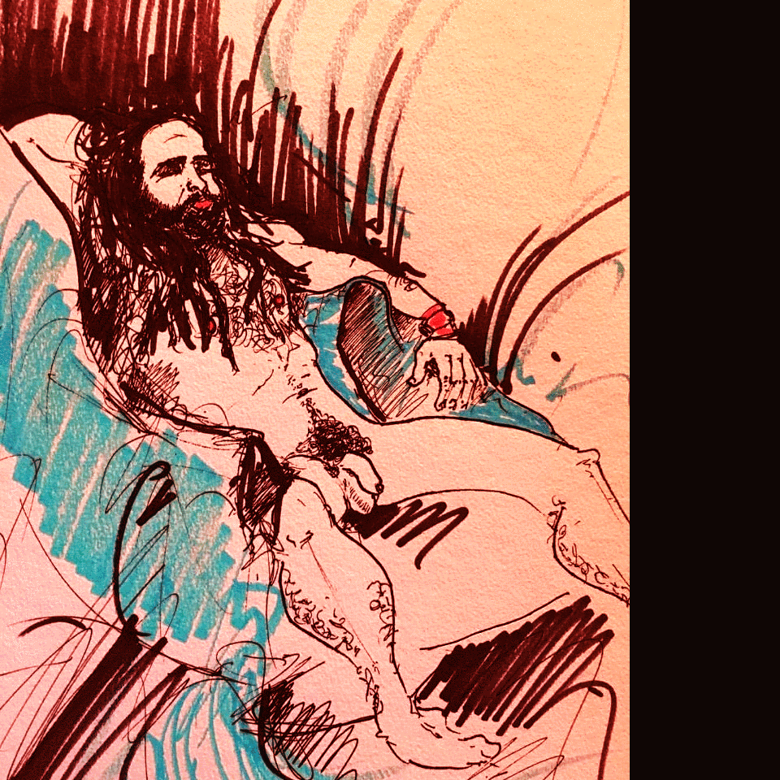

그냥 여기있기
다음페이지➔
예수는 당신을(👨❤️👨빼고) S2한다🤘
남자끼리 나누는 성 행위. 이방 신전의 남자 사제(male shrine prostitute)와 제사 의식의 일환으로 이루어지는 성 행위를 비롯하여 동성끼리의 매춘(음행) 행위를 포함한 말.
"그 땅에 또 남색하는 자가 있었고 여호와께서 이스라엘 자손 앞에서 쫓아내신 국민의 모든 가증한 일을 무리가 본받아 행하였더라."
"살인하는 자며 음행하는 자며 남색하는 자며 사람을 탈취하는 자며 거짓말 하는 자며 거짓 맹세하는 자와 기타 바른 교훈을 거스리는 자를 위함이니"
"이와 같이 남자들도 순리대로 여인 쓰기를 버리고 서로 향하여 음욕이 불 일듯 하매 남자가 남자로 더불어 부끄러운 일을 행하여 저희의 그릇됨에 상당한 보응을 그 자신에 받았느니라"
"그러므로 아이들 중에 남자는 다 죽이고 남자와 동침하여 사내를 안 여자는 다 죽이고 남자와 동침하지 아니하여 사내를 알지 못하는 여자들은 다 너희를 위하여 살려 둘것이니라"
"누구든지 여인과 교합하듯 남자와 교합하면 둘 다 가증한 일을 행함인즉 반드시 죽일찌니 그 피가 자기에게로 돌아가리라"